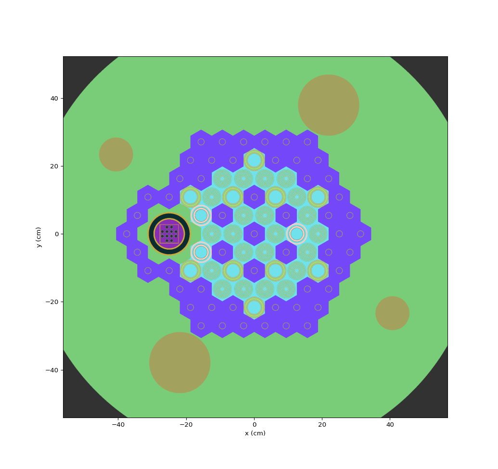

Flux Spectrum in 2D-HFTER Full Core¶
OpenMC has no functionality to tally scores in a tagged space. However, ROBIN3’s OpenMC Compatibility Module can generate tallies for all cells converted from tagged region in ROBIN3 model. With post-processing functionality provided by OpenMC Compatibility Module, scores in cells of the same tag are automatically summed.
[1]:
import openmc
import robin3
from robin3 import openmc_compatible
Create OpenMC Model¶
Firstly, load pre-defined model in “Modeling HFTER Full Core” example. Suppose that we’ve already export the ROBIN3 into a json file and have result file in current working directory.
[2]:
!ls
HFTER.h5 hfter.json
[3]:
# Read model from input file
robin3_model = robin3.utils.load_data_from_file('hfter.json')[1]
Add openmc_compatible parameters to model dictionary. In this example, we choose to tally flux in tagged regions.
[4]:
# Add openmc_compatible parameters to model dictionary
parameters = {'volume':'robin3', 'nuclide_density':'robin3'}
tallies = ['flux']
parameters['tallies'] = tallies
robin3_model['openmc_compatible'] = parameters
We’ve set OpenMC to calculate volumes (used to calculate tagged spaces’ total volume and fissionable mass of the whole model to deduce absolute flux). The results of volume calculation will be printed during conversion. Caveat: do not use ROBIN3 to calculate volume if it exists several tagged regions with the same name.
[5]:
openmc_model = openmc_compatible.get_model(robin3_model)
100%|██████████| 344/344 [00:03<00:00, 101.14it/s]
=================> Cells Volume <=================
cell id: 540, volume: 78.53193
cell id: 243, volume: 78.53193
cell id: 521, volume: 78.53193
cell id: 538, volume: 78.53193
cell id: 632, volume: 254.44346
cell id: 628, volume: 254.44346
cell id: 630, volume: 254.44346
cell id: 596, volume: 254.44346
cell id: 592, volume: 254.44346
cell id: 594, volume: 254.44346
cell id: 262, volume: 78.53193
cell id: 246, volume: 78.53193
cell id: 155, volume: 254.44346
cell id: 150, volume: 254.44346
cell id: 152, volume: 254.44346
cell id: 191, volume: 254.44346
cell id: 187, volume: 254.44346
cell id: 189, volume: 254.44346
cell id: 508, volume: 78.53193
cell id: 519, volume: 78.53193
cell id: 536, volume: 78.53193
cell id: 612, volume: 254.44346
cell id: 610, volume: 254.44346
cell id: 614, volume: 254.44346
cell id: 608, volume: 254.44346
cell id: 606, volume: 254.44346
cell id: 604, volume: 254.44346
cell id: 602, volume: 254.44346
cell id: 598, volume: 254.44346
cell id: 600, volume: 254.44346
cell id: 576, volume: 254.44346
cell id: 574, volume: 254.44346
cell id: 578, volume: 254.44346
cell id: 548, volume: 254.44346
cell id: 550, volume: 254.44346
cell id: 546, volume: 254.44346
cell id: 274, volume: 78.53193
cell id: 264, volume: 78.53193
cell id: 248, volume: 78.53193
cell id: 171, volume: 254.44346
cell id: 173, volume: 254.44346
cell id: 169, volume: 254.44346
cell id: 175, volume: 254.44346
cell id: 177, volume: 254.44346
cell id: 179, volume: 254.44346
cell id: 185, volume: 254.44346
cell id: 181, volume: 254.44346
cell id: 183, volume: 254.44346
cell id: 207, volume: 254.44346
cell id: 209, volume: 254.44346
cell id: 205, volume: 254.44346
cell id: 235, volume: 254.44346
cell id: 233, volume: 254.44346
cell id: 237, volume: 254.44346
cell id: 582, volume: 254.44346
cell id: 584, volume: 254.44346
cell id: 580, volume: 254.44346
cell id: 552, volume: 254.44346
cell id: 554, volume: 254.44346
cell id: 556, volume: 254.44346
cell id: 201, volume: 254.44346
cell id: 199, volume: 254.44346
cell id: 203, volume: 254.44346
cell id: 231, volume: 254.44346
cell id: 229, volume: 254.44346
cell id: 227, volume: 254.44346
cell id: 568, volume: 254.44346
cell id: 564, volume: 254.44346
cell id: 566, volume: 254.44346
cell id: 562, volume: 254.44346
cell id: 558, volume: 254.44346
cell id: 560, volume: 254.44346
cell id: 534, volume: 254.44346
cell id: 529, volume: 254.44346
cell id: 531, volume: 254.44346
cell id: 219, volume: 254.44346
cell id: 215, volume: 254.44346
cell id: 217, volume: 254.44346
cell id: 225, volume: 254.44346
cell id: 221, volume: 254.44346
cell id: 223, volume: 254.44346
cell id: 254, volume: 254.44346
cell id: 250, volume: 254.44346
cell id: 252, volume: 254.44346
cell id: 378, volume: 0.52676
cell id: 381, volume: 0.52676
cell id: 384, volume: 0.52676
cell id: 387, volume: 0.52676
cell id: 390, volume: 0.50891
cell id: 393, volume: 0.52676
cell id: 396, volume: 0.52676
cell id: 399, volume: 0.50891
cell id: 402, volume: 0.50891
cell id: 405, volume: 0.52676
cell id: 408, volume: 0.52676
cell id: 411, volume: 0.52676
=================> Materials Volume <=================
material id: 2, volume: 112.992
material id: 3, volume: 6.3211200000000005
Now we have an OpenMC model. It is strongly recommended to use OpenMC Plot Explorer for plotting geometry, which is much faster than OpenMC Python API’s built-in plot function. The following figure shows the geometry plotted in OpenMC Plot Explorer GUI, which is identical to ROBIN3 model(except color XD).

Processing the Outputs¶
[6]:
import matplotlib.pyplot as plt
plt.rcParams['figure.figsize'] = [16, 8]
openmc_compatible.process_flux method can plot a figure containing step plots of flux spectrum in all tagged spaces. Number of energy groups is according to ROBIN3. This method returns a Pandas Dataframe giving a summary of results.
[7]:
openmc_result = openmc.StatePoint("statepoint.065.h5")
# If ROBIN3 is choosed to calculate volumes, arg r3_vol should be assigned True.
openmc_compatible.process_flux(openmc_result, r3_vol=True)
[7]:
| fuel_1 | fuel_10 | fuel_11 | fuel_12 | fuel_2 | fuel_3 | fuel_4 | fuel_5 | fuel_6 | fuel_7 | fuel_8 | fuel_9 | loop_1 | loop_2 | loop_3 | loop_4 | |
|---|---|---|---|---|---|---|---|---|---|---|---|---|---|---|---|---|
| energy high [eV] | ||||||||||||||||
| 1.000000e+07 | 8.382695e+10 | 1.168732e+11 | 7.390521e+10 | 1.019620e+11 | 9.058883e+10 | 8.611301e+10 | 8.990434e+10 | 1.038868e+11 | 1.031186e+11 | 8.342095e+10 | 9.330717e+10 | 1.085195e+11 | 2.233277e+10 | 1.941859e+10 | 4.305434e+09 | 7.064458e+09 |
| 6.065500e+06 | 3.980501e+11 | 4.640745e+11 | 3.646410e+11 | 3.773631e+11 | 4.205893e+11 | 3.701882e+11 | 4.243955e+11 | 4.275804e+11 | 4.615111e+11 | 3.606286e+11 | 4.050204e+11 | 4.311377e+11 | 9.964092e+10 | 8.638849e+10 | 2.439686e+10 | 3.808344e+10 |
| 3.679000e+06 | 8.047515e+11 | 9.775182e+11 | 8.144732e+11 | 8.786991e+11 | 8.795875e+11 | 7.085022e+11 | 8.604446e+11 | 9.319571e+11 | 9.460002e+11 | 7.345308e+11 | 8.482429e+11 | 9.150436e+11 | 2.112465e+11 | 1.856710e+11 | 5.807183e+10 | 8.707432e+10 |
| 2.231000e+06 | 9.969212e+11 | 1.196063e+12 | 1.002027e+12 | 1.074142e+12 | 1.093259e+12 | 9.606702e+11 | 1.047195e+12 | 1.143159e+12 | 1.188062e+12 | 9.477212e+11 | 1.113276e+12 | 1.124723e+12 | 4.341980e+11 | 3.717076e+11 | 1.302743e+11 | 1.908963e+11 |
| 1.353000e+06 | 9.325835e+11 | 1.132238e+12 | 9.446453e+11 | 1.101632e+12 | 1.050459e+12 | 8.621989e+11 | 1.031914e+12 | 1.086240e+12 | 1.114099e+12 | 9.025027e+11 | 9.776791e+11 | 1.057069e+12 | 5.255317e+11 | 4.460073e+11 | 2.080373e+11 | 3.123587e+11 |
| ... | ... | ... | ... | ... | ... | ... | ... | ... | ... | ... | ... | ... | ... | ... | ... | ... |
| 2.500000e-02 | 1.155261e+11 | 1.281502e+11 | 1.270576e+11 | 1.277336e+11 | 1.470914e+11 | 1.208593e+11 | 1.179377e+11 | 1.257699e+11 | 1.294046e+11 | 1.167487e+11 | 1.140656e+11 | 1.158830e+11 | 1.316783e+10 | 1.337031e+10 | 1.084775e+10 | 8.645156e+09 |
| 2.000000e-02 | 1.022442e+11 | 1.094665e+11 | 1.347981e+11 | 1.144757e+11 | 1.115466e+11 | 1.035241e+11 | 1.029901e+11 | 8.769948e+10 | 1.137514e+11 | 1.222522e+11 | 9.878184e+10 | 9.482982e+10 | 1.224884e+10 | 1.059416e+10 | 7.780369e+09 | 7.454142e+09 |
| 1.500000e-02 | 7.965356e+10 | 9.197905e+10 | 8.967084e+10 | 8.901377e+10 | 8.034512e+10 | 9.662500e+10 | 7.316412e+10 | 7.142514e+10 | 9.725734e+10 | 9.266495e+10 | 7.968603e+10 | 7.538539e+10 | 9.204326e+09 | 8.379327e+09 | 6.974102e+09 | 5.156516e+09 |
| 1.000000e-02 | 5.970545e+10 | 6.098838e+10 | 5.303492e+10 | 5.084866e+10 | 5.856488e+10 | 5.681828e+10 | 4.109086e+10 | 4.569987e+10 | 5.622816e+10 | 6.371771e+10 | 4.379588e+10 | 5.401718e+10 | 5.558438e+09 | 5.308297e+09 | 3.496485e+09 | 3.578289e+09 |
| 4.999999e-03 | 1.770836e+10 | 1.788919e+10 | 1.909463e+10 | 1.844400e+10 | 2.030621e+10 | 2.263185e+10 | 1.297049e+10 | 1.720754e+10 | 2.171353e+10 | 1.535894e+10 | 1.441043e+10 | 1.180533e+10 | 1.900640e+09 | 1.704642e+09 | 8.001304e+08 | 9.768184e+08 |
69 rows × 16 columns
Then we put results obtained by ROBIN3 here for comparison.
[8]:
robin3_result = robin3.ResultProcessor("HFTER.h5")
plotter = robin3_result.generate_plotter()
fig = plotter.plot_neutron_fluxes_in_tagged_regions()